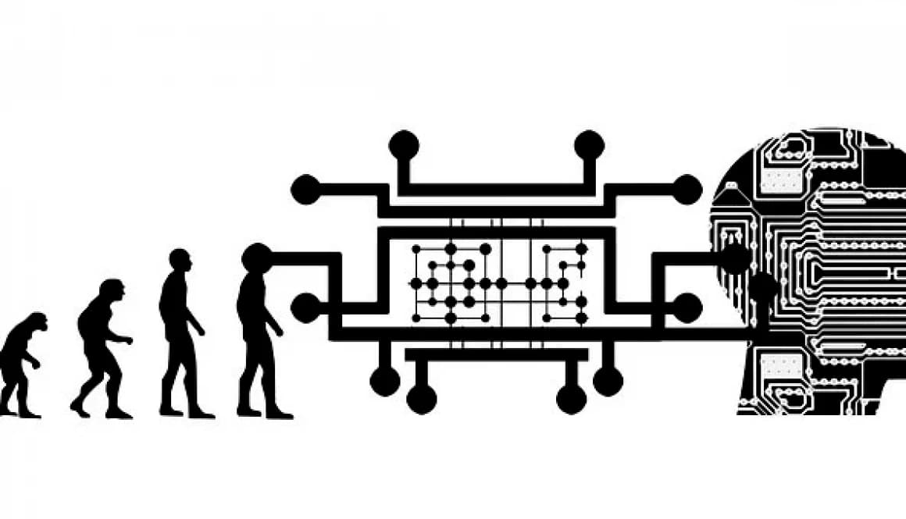
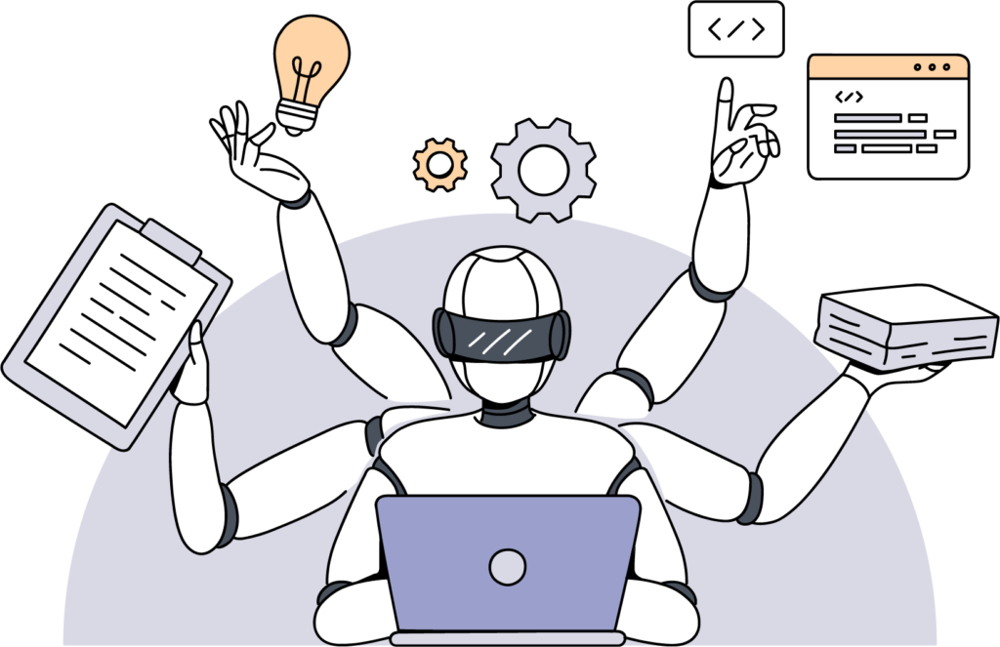

Bienvenidos al mundo de la Inteligencia Artificial
Este sitio está dedicado a explicar los conceptos básicos de la inteligencia artificial (IA), su historia, aplicaciones, ventajas y desventajas en la actualidad.
¿Qué es la Inteligencia Artificial?
Inteligencia Artificial (IA) es un campo de la informática que se centra en crear sistemas capaces de realizar tareas que, si las hicieran los humanos, requerirían inteligencia. Esto incluye habilidades como el aprendizaje, el razonamiento, la toma de decisiones, la comprensión del lenguaje y la percepción. La IA busca desarrollar máquinas que puedan emular procesos cognitivos humanos, como el aprendizaje, el razonamiento lógico, la percepción sensorial y la interacción en lenguaje natural.

Historia de la Inteligencia Artificial
- Años 1940-1950: Los fundamentos de la IA comenzaron con el trabajo de figuras como Alan Turing, quien propuso la idea de una máquina que simulara el razonamiento humano. En 1950, Turing introdujo el Test de Turing, un criterio para medir si una máquina puede exhibir comportamiento inteligente.
- Años 1950-1970: El término "Inteligencia Artificial" fue acuñado en 1956 durante la conferencia de Dartmouth. Pioneros como John McCarthy y Marvin Minsky desarrollaron los primeros programas que resolvían problemas matemáticos y lógicos.
- Años 1970-1980: El auge inicial de la IA fue seguido por un periodo de estancamiento conocido como el primer "invierno de la IA", debido a la falta de poder computacional.
- Años 1980-1990: La IA revivió con los sistemas expertos, pero también enfrentó limitaciones.
- Años 2000-presente: La IA moderna ha florecido gracias al aprendizaje profundo, el big data y los avances en las redes neuronales, dando lugar a innovaciones como los autos autónomos y asistentes virtuales.

Aplicaciones de la Inteligencia Artificial
- Visión artificial: Reconocimiento de imágenes y videos, utilizado en vigilancia, diagnóstico médico y autos autónomos.
- Procesamiento del lenguaje natural: Traductores automáticos, chatbots, y asistentes virtuales como Siri y Alexa.
- Robótica: Robots que realizan tareas complejas, desde fabricación hasta exploración espacial.
- Medicina: Diagnóstico, análisis de datos médicos y descubrimiento de fármacos.
- Automóviles autónomos: Vehículos que se conducen solos mediante IA.
- Finanzas: Detección de fraude, trading algorítmico y análisis de riesgos.
- Entretenimiento y recomendaciones: Sistemas como Netflix y Spotify que sugieren contenido basado en preferencias del usuario.
- Marketing y ventas: Optimización de campañas y segmentación de audiencias.

Ventajas de la Inteligencia Artificial
- Automatización de tareas repetitivas: La IA libera a los humanos para concentrarse en trabajos más creativos.
- Mayor precisión: Sistemas que pueden operar con mayor exactitud que los humanos.
- Procesamiento rápido de datos: Analiza grandes volúmenes de información en poco tiempo.
- Disponibilidad continua: Las máquinas de IA pueden trabajar 24/7.
- Toma de decisiones basada en datos: Mejora la eficiencia en múltiples sectores.
Desventajas y riesgos de la Inteligencia Artificial
- Pérdida de empleos: La automatización podría reemplazar trabajos en sectores clave.
- Sesgos algorítmicos: La IA puede perpetuar prejuicios si los datos de entrenamiento son sesgados.
- Privacidad y vigilancia: Uso indebido de información personal en sistemas de IA.
- Falta de explicabilidad: Las decisiones de la IA pueden ser difíciles de entender.
- Dependencia excesiva: Confiar demasiado en la IA podría reducir las habilidades humanas.
- Amenazas de seguridad: La IA puede ser utilizada para ataques cibernéticos avanzados.

Sobre el creador
Contacto
Puedes contactarme a través de mis redes sociales o enviándome un correo a concepcionmiguel611@gmail.com.